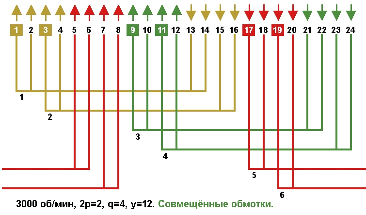
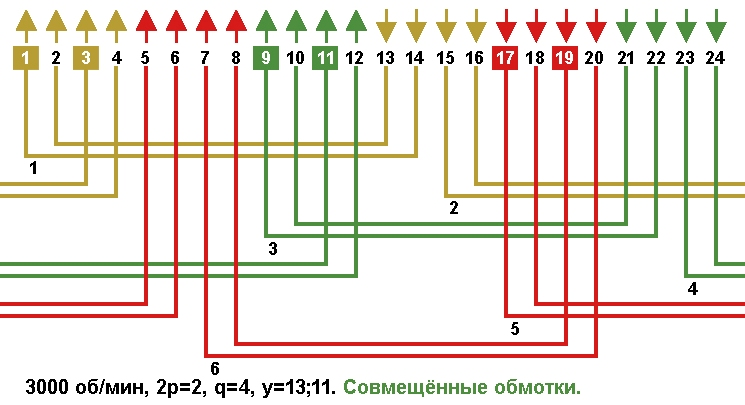
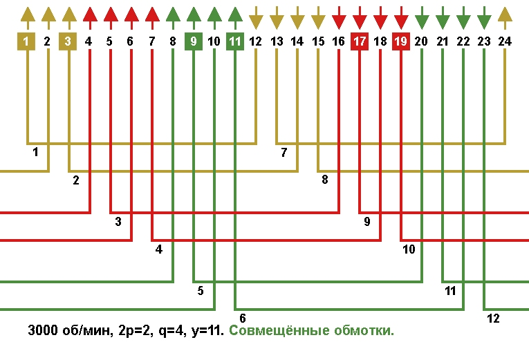

Перейти на главную страницу справочника.
Однослойные совмещённые обмотки со сплошной фазной зоной в электродвигателях 3000 об/мин, Z1=24.
- Число пазов на полюс и фазу q=4 при Z1=24 и 2p=2. Фазная зона основной обмотки занимает 2 паза в полюсе (q=2) для одной стороны катушки. Фазная зона совмещённой обмотки занимает 2 паза в полюсе (q=2) для одной стороны катушки.
- На Рис. 1 схема укладки однослойной совмещённой обмотки со сплошной фазной зоной. Шаг по пазам диаметральный. Стрелками указано направление мгновенных значений тока в фазных зонах. Все катушки обмотки занимают пазы в своих фазных зонах.
Рис. 1 
{kind=link}
- На Рис. 2 схема укладки однослойной совмещённой обмотки со сплошной фазной зоной. Шаг по пазам диаметральный. Все катушки обмотки занимают пазы в своих фазных зонах.
Рис. 2 
{kind=link}
- На Рис. 3 схема укладки однослойной совмещённой обмотки вразвалку со сплошной фазной зоной. Шаг по пазам укороченный. Визуально фазные зоны сдвинуты в лево, но стороны катушек находятся в своих фазных зонах.
Рис. 3 
{kind=link}
- Все выше показанные обмотки называются обмотками со сплошной фазной зоной, так как стороны катушек (катушечных групп) расположены в фазных зонах своих фаз.
Недостатком обмоток со сплошной фазной зоной являются большие потери в стали сердечника, вызванные несинусоидальностью МДС в воздушном зазоре.
- Электрические и магнитные характеристики у этих обмоток одинаковые. Пересчёт обмоточных данных при переходе с одной схемы на другую не требуется.
У обмоток на Рис. 1 и 2 шаг по пазам диаметральный, расход провода и вылет лобовых частей будет больше чем в схеме на Рис. 3.
Для уменьшения вылета лобовых частей и расхода провода, выбираем обмотку на Рис. 3.
28.03.2019 г.